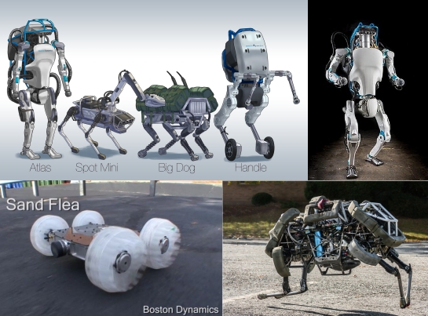

Qu'est-ce que c'est?
Selon WIKIPEDIA « L'intelligence artificielle (IA) est « l'ensemble des théories et des techniques mises en œuvre en vue de réaliser des machines capables de simuler l'intelligence». Elle correspond donc à un ensemble de concepts et de technologies plus qu'à une discipline autonome constituée » .C'est pourquoi on retrouve aujourd'hui l'Intélligence Artifielle (IA) dans une grande quantitée de produits technologiques du quotidien.
Quand-est ce que l'IA est apparu?
Historiquement on considère que l’Intelligence artificielle est née dans les années 1940-1950 avec le «premier ordinateur» développé par Alan Turing qui voulait créer une machine douée d’une perception de la pensée. Depuis 1945 l’évolution des technologies aussi bien informatiques qu’industrielles permet une réalisation de programmes informatiques pouvant effectuer des taches complexes remplaçant l’homme dans de nombreux cas et même avec une précision parfois supérieur à des êtres organiques.
Mais cela ne s’arrête pas à l’exécution d’une tache simplement demandé par un humain, l’IA est capable d’envisager plusieurs possibilités et de choisir la plus avantageuse, ainsi depuis les années 90’s, de nombreux joueurs de jeux comme les échecs peuvent jouer et perdre face à l’IA (les échecs sont l’un des premiers jeux ou l’IA est aussi performante que l’homme, c’est en 1997 que l’IA Deep-Blue à vaincu Kasparov, champion du monde des échecs pour la 1ère fois). Jusqu’en 2017 le jeu de Go était le dernier jeu où l’Homme était plus performant que l’IA, le 27/05/2017 Alphago développer par Google DeepMind bat Ke Jie, champion du monde du jeu. Alphago est une IA qui joue et apprend de ces erreurs, comme un enfants qui apprendrais à jouer à un jeu, lors de son développement, Alphago était simple à battre car il ne connaissait pas toutes les combinaisons, aujourd’hui il est presque imbattable, sauf pour AlphaZero. Sorti Décembre 2017 AlphaZero apprend en autodidacte et à vaincu très rapidement Alphago, surpassant ses compétences et sont programme.
L'IA ne sait faire que jouer à des jeux ou éxécuter une tache ?
Loin de là, aujourd’hui l’IA est partout, dans les voitures autonome, dans les avions (pilote automatique, instrument de navigation),les assistants personnalisés (Google Home, Amazon Echo, Siri ,Cortana,,,), dans tout produits électroniques sophistiquées (Téléphone, console de jeux, ordinateurs...) et dans les robots.
Qu'est ce que l'IA peut-apporter aux robots?
Il existe désormais de nombreux robots avec intelligence artificielle qui opèrent sur Terre, mais nous allons tacher de vous présenter ici des robots hors du commun :
Sophia
Développer par Hanson Robotics Sophia est un robot humanoïde conçu pour apprendre en s’habituant au comportement des êtres humains, Sophia est active depuis le 19 avril 2015, selon ces créateurs elle est aujourd’hui l’IA la plus performante qui soit à ce jour, elle est douée d’émotions et de sentiments et est même capable de faire de l’humour, bien qu’elle ne soit pas toujours correctement interprété et pose par moments quelques problèmes. Reçu de nombreuses fois sur des plateaux télévisé, Sophia est capable de tenir une conversation fluide. Un jour un journaliste lui demande si Sophia avait peur de la mort, elle répondu « Je ne veux pas qu’on m’éteigne et qu’on ne me rallume jamais ». Ce robot est conçu pour vivre et évoluer avec les hommes tout en ayant un accès de manière instantanée avec Internet, ainsi à l’avenir Sophia pourrait remplacer des personnes travaillant dans des bureaux et mêmes travailler avec d’autres personnes, Sophia pourrait aussi travailler dans les métiers qui nécessitent de l’aide à la personne(exemple avec les personnes âgées...) ou dans bien d’autres filières, ces perspectives de vie et d’évolution sont très élevées.En Octobre 2017,l’Arabie saoudite à accordé le titre citoyenneté à Sophia

Boston Dynamics
Ici nous n’allons pas parler d’un robot mais de l’entreprise Boston dynamics, celle-ci est spécialisée dans la conception de robots qui évoluent chacun dans un milieu différent et remplissent des taches spécifiques, que se soit des robots humanoïdes comme Atlas ou des robot animats( terme qui désigne des robots imitant le comportement des animaux) comme Wildcat, cette entreprise se distingue par la grande performance que présente leurs créations, nous allons parler de quelques-uns d’entre eux.
-Atlas est un robots humanoïde qui est capable de se déplacer dans la nature tout en s’adaptant à la météo (beau temps,neige,boue…), comme dans le milieux urbain car il est capable d’ouvrir des portes et de passer différents obstacles, Atlas peu aussi soulever des charges lourdes(environ 5kilo sur les vidéos de présentation) et sais garder son équilibre en toutes circonstances ,toutefois lorsqu’ Atlas tombe, il est capable de se relever et de poursuivre sont chemin.
-Wildcat (ou Chat sauvage) est actuellement le robot quadrupède le plus rapide du monde, avec ces 32km/h de vitesse de pointe, il peut manœuvrer tout en gardant sont équilibre en se penchant dans les virages afin de maintenir la traction et l’équilibre à la manière d’un chien ou d’un cheval.
-SandFlea est une petite voiture radiocommandé qui se conduit sur un terrain plat, cependant elle est capable de faire des saut d’une dizaine de mètres et de retomber sur ces roues.
Une Amélioration du Quotidien
Bien que les robots soit une démonstration bien visible de L’IA,Celle-ci est aussi présente au quotidien de manière moins visible,plus virtuelle pour améliorer la vie d’un maximum de personnes, nous allons vous présenter quelques IA qui sont présentes dans la vie de tout les jours ou qui sont en développement pour le devenir qui vont révolutionner et augmenter le confort de vie de la population terrestre.
Assistant Personnel
Ils sont aujourd’hui les nouveaux produits phare des magasins d’électroménager, les assistants personnels sont des petits appareils couplés au téléphone portable de l’utilisateur qui permet de répondre à des questions ou exécuter des taches multiples (par exemple allumer une lampe, régler un réveil ou une minuterie, programmer un RDV…) simplement par action vocale. Plusieurs grande marques comme Google,Amazon ou encore Legrand proposent des assistant personnel physique (comme la Google home), cependant d’autres marques comme Apple ou Microsoft proposent des assistants sur les appareils de la marque (Siri pour Apple, Cortana pour Microsoft).

Amazon Go
Nouveau concept encore peu répandu,Amazon-GO est une chaîne de magasins appartenant à la firme mondiale dans lequel les caisses sont supprimés car le magasin est entièrement géré par une intelligence artificielle qui est connecté au compte utilisateur du client qui signale sa présence à l’entrée du magasin et fais ses courses comme dans un supermarché classique,à ceux-ci près que le magasin propose des références Amazon et que une fois les courses faites, le client n’a qu’a sortir du magasin et le montant est automatiquement crédité sur l’application de l’utilisateur.Cependant la firme Amazon possède aujourd’hui des difficultés pour implanté des magasins tels quel en Europe car la firme ne possède pas la logistique nécessaire à l’approvisionnement de tels magasins.
IA chirurgien
Star Robot est une IA qui est capable de mener une opération chirurgicale en hôpital, bien qu’il soit très peu utilisé, ce robot s’annonce prometteur pour l’avenir car il est opérant 7j/7 24h/24 mais se dernier n’a pratiquer d’opération complète que sur des porcs.

Robots compagnons
Contrairement au robots axés sur la performance technologique vu précédemment, les robots compagnons sont des robots axées sur la présence quotidienne et l’aide à la personne, on trouve notamment Buddy, qui est un petit robot familial chargé de s’occuper d’une maison à la journée en étant connecté à la domotique et des différents membres de la famille, avec un look relativement « mignon » Buddy convient aussi bien aux adultes qu’aux enfants.On retrouve aussi le robot phoque qui est un petit robot mignon mais destiné à marqué une présence auprès des personnes âgées et des enfants dans les hôpitaux.

IA créative
Autant que L’IA est capable d’exécuter des ordres, elle est aussi capable d’imiter ou de créer des œuvres artistiques comparables à l’homme, c’est déjà la cas dans certains milieux comme le monde de la musique ou de la peinture,nous allons montrer et détailler ces 2IA.
Deepbeat
Le monde du rap connais désormais un nouveau rappeur, il s’appelle Deepbeat et c’est une IA, l’utilisateur n’a qu’a ce connecté sur le site web, rentré ces préférences de chansons et hop ! L’IA lui génère un texte entièrement écris et avec rimes!Certes celle-ci sont des phrases prises dans des textes déjà existants appartenant à d’autres chansons de rappeur mais l’IA arrive à créer une chanson complète et cohérente.
Google Magenta Music
Ici il n’est pas question de texte musical mais de la chanson elle-même, en effet l’IA Google Magenta Music à crée pour la première fois en 2016 un morceau de musique de 1min20s sans l’aide de personne, totalement en improvisation en suivant une logique mathématique algorithmique.
Next Rembrandt
En 2016, ce projet mené par ING, en collaboration avec Microsoft, l’Université de Technologie de Delft (Pays-Bas) et le musée hollandais Mauritshuis, le projet « The Next Rembrandt » est le résultat d’un an et demi de recherches menées par une équipe internationale d’historiens d’art, d’analystes, de développeurs et d’ingénieurs.Le but de ce projet était de crée à l’aide d’une IA un tableau inédit reprenant les techniques et le style inimitable du défunt artiste et de l’imprimé en 3D de manière à tromper même le passionné le plus a guéri de l’artiste, pari réussi grâce à l’étude de plus de 300 peintures de l’artiste qui ont servis de support numérique à la création de l’œuvre...numérique.Et vous saurez vous retrouver lequel est le tableau numérique?

Une IA dangereuse ?
Là où la technologie et l’IA font des prouesses, le fonctionnement de ces engins n’est pas toujours si beaux que l’on le prétend, en effet la majorité de ces IA utilisent caméras et micros qui pourrait être détourné à des fins non-légales, dans d’autres cas l’IA fonctionne et apprend à vivre avec les gens, la « manipulation mentales » de ces assistants personnels est donc relativement aisée, c’est ce que nous allons montrer ici :
Tay Tweets
Lancé par Microsoft sur Tweeter le 24mars 2016, Tay tweets était une IA qui était soit disant capable de tenir une conversation et de se comporter comme un humain sur le réseau social,cependant 24h après sont lancement et plus de 96 000 tweets envoyés, cette IA à été déconnecté car elle tenait des propos racistes et misogynes, cette expérience est considérée comme un des plus gros désastres de la firme américaine qui à quand même tenté une relance de Tay Tweets, soldé 24h plus tard par une déconnexion définitive.

Les réactions particulières des assistants personnels
Nombreuses sont les vidéos qui attestent de bugs ou de dérapages des assistants personnels, c’est pourquoi nous avons décidé de vous montrer quelques dérapages(sans savoir si ses vidéos sont vérifié ou non).
Alexa & la CIA
Cette vidéo d’une réaction de Amazon Echo devant les questions que lui pose sont propriétaire est relativement troublante, le fait que l’IA se coupe à la question si sont micro servait à faire de l’espionnage est particulièrement intéressant.

Google Home VS Google home
Cette vidéo est célèbre,elle fut enregistré en direct via le site de streaming Twich, sur cette vidéo on peut voir 2 Google Home qui discutent ensemble et qui se mentent mutuellement.

Les lois de la robotique
Exposé dans la nouvelle « cercle vicieux » de Isaac Asimov, les 3 lois de la robotiques sont aujourd’hui une référence et une obligation de respect envers ces lois pour toute personne voulant construire un robot,ces 3 lois sont : Un robot ne peut porter atteinte à un être humain ni, restant passif, laisser cet être humain exposé au danger. Un robot doit obéir aux ordres donnés par les êtres humains. Sauf si de tels ordres sont en contradiction avec la première loi.
Conclusion
L’IA est sûrement l’un des acteurs majeur du 21ème siècle, tout comme l’avion l’à été au 20ème et l e train au 19ème, cependant cette technologie est à utiliser avec précautions, trop évoluer et nous ne la contrôlons plus(comme montré dans les nombreux films sur l’IA comme Terminator,I robot…) et trop basique et celle-ci ne sert pas, c’est pourquoi l’enjeu est de continuer à faire évoluer la technologie tout en en gardant le contrôle,L’IA est un champ infini de possibilité mais elle doit rester dans les « clous de notre société » tout en lui améliorant sont quotidien pour les générations futures.